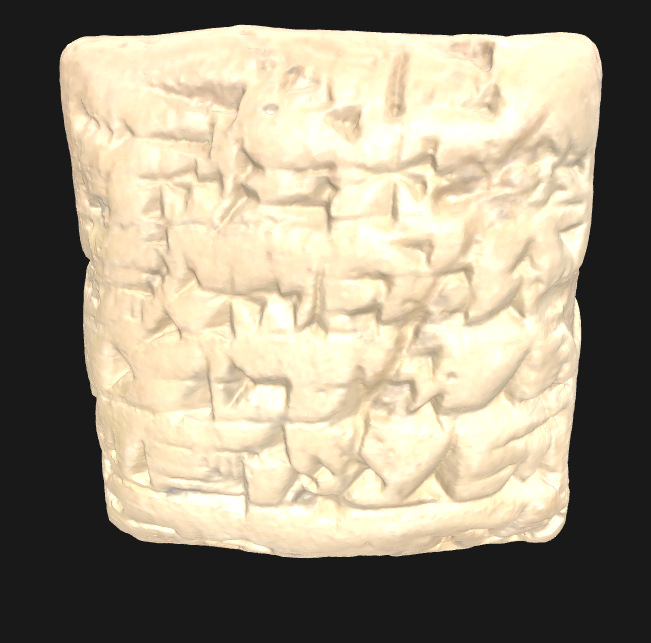
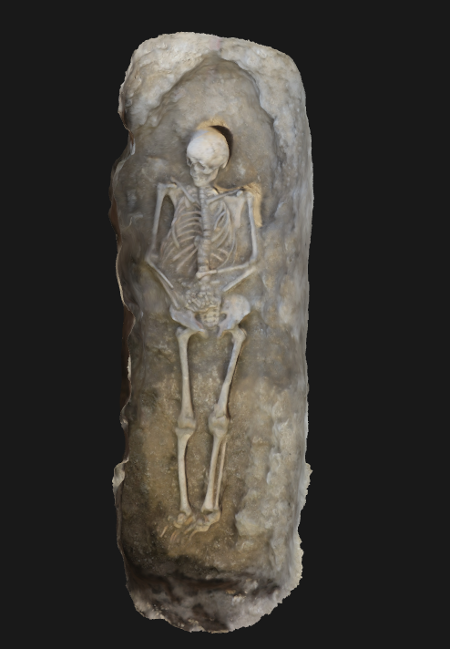
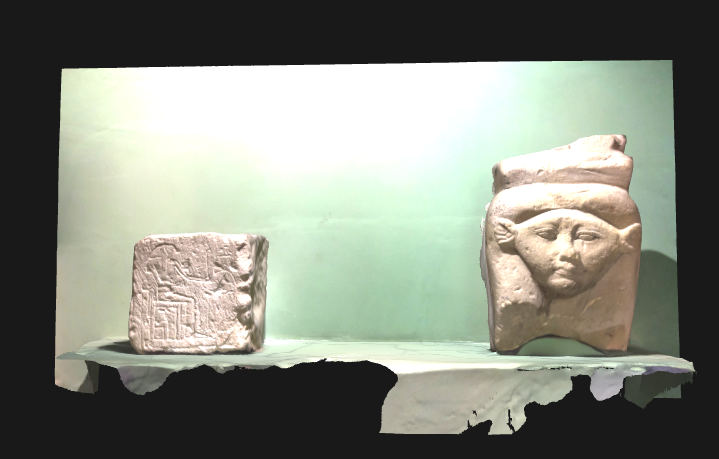
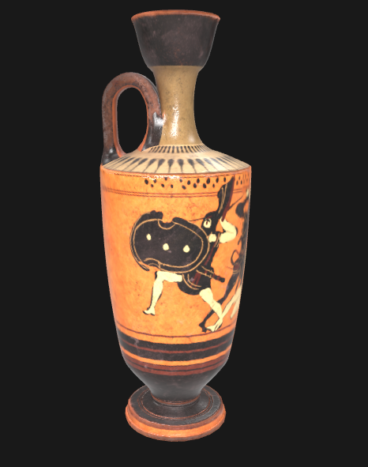
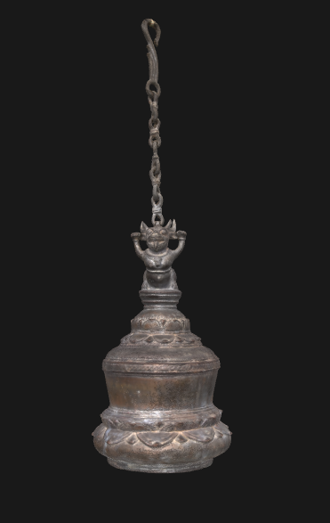
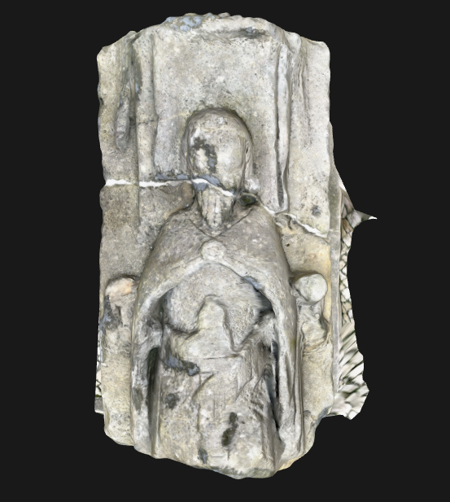
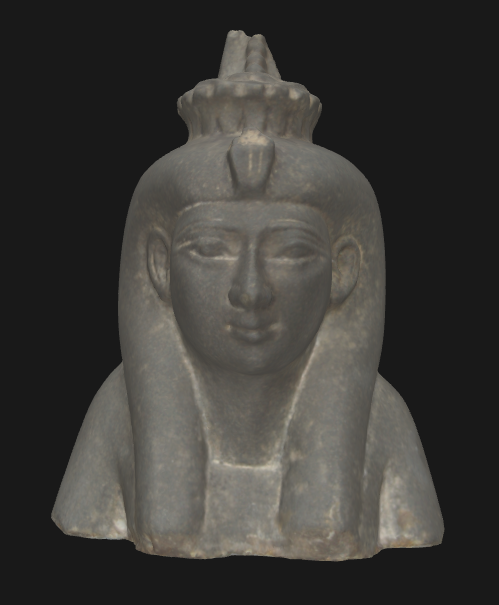

Ancient Sculpture
500 BCClassical Greek marble artifact...

Medieval Sword
1200 ADRoyal battle sword with engravings...
Egyptian Sarcophagus
1300 BCAncient Egyptian burial artifact...

Knight's Armor
1400 ADFrench knight's full plate armor...

Roman Coin Collection
100 ADRoman Empire currency collection...

Viking Shield
900 ADWooden shield with iron boss...

Terracotta Warrior
210 BCChinese emperor's burial guard...
Gothic Architecture
1250 ADCathedral stone fragment...
Mayan Calendar Stone
500 ADAncient astronomical calendar...
Renaissance Frame
1500 ADOrnate painting frame...

Industrial Gear
1800 ADEarly industrial machinery part...
Art Deco Sculpture
1920 ADGeometric bronze sculpture...
Digital Art Installation
2020 ADInteractive digital artwork...
Holographic Interface
2023 AD3D interactive display system...
AI-Generated Sculpture
2024 ADMachine learning artwork...

Quantum Computing Component
2024 ADAdvanced computational hardware...
Viewed: 0/16 artifacts